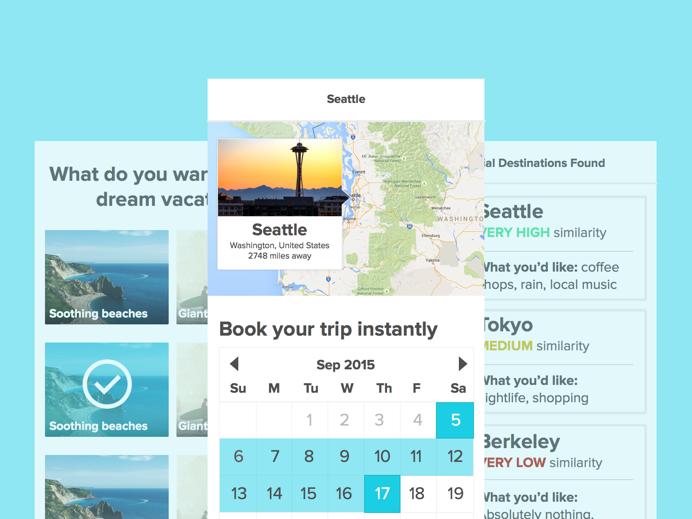
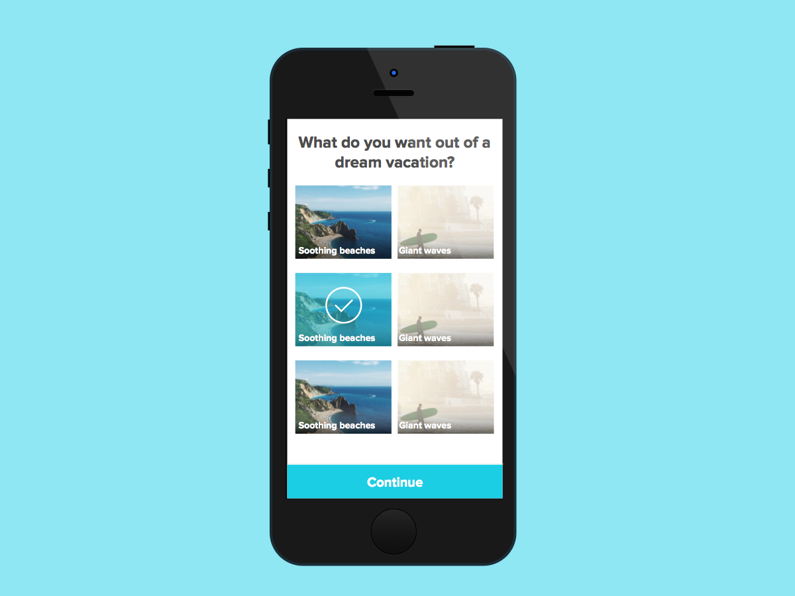
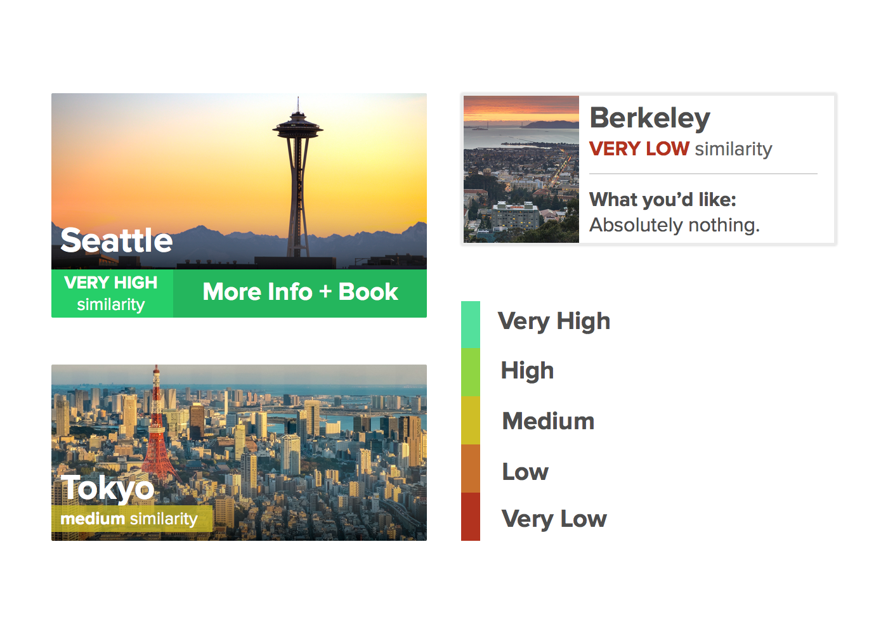
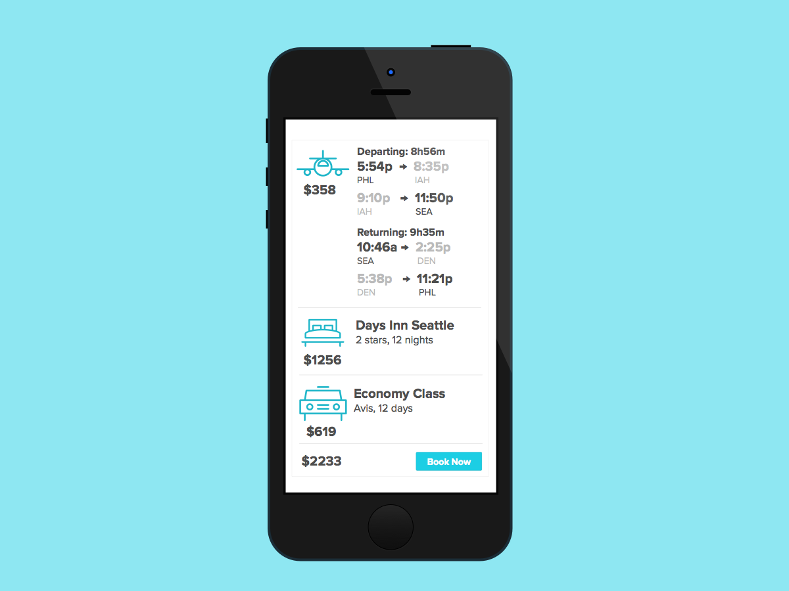

My project at PennApps Fall 2015 was a mobile app that matches people to potential travel destinations. Using the Ionic framework as a base, my objective that weekend was to design a straightforward UI that helps people book vacations faster than it takes to brush your teeth.
My final design was intentionally ambitious to build in 36 hours, and in the end we barely made a working prototype. However, it was a great exercise in going through the design process and rapidly iterating in such a short timeframe.
My team began by brainstorming why people choose the places they take a vacation to. We quickly discovered that the characteristics of an ideal travel destination couldn't be quantified easily, so I designed a Buzzfeed-style questionaire where users can check off characteristics of a travel destination that they liked. Throughout the app, I decided focus on using imagery to appeal to a sense of adventure.

I went through multiple iterations of the results display. I eventually went with the rightmost iteration since it gave the user insights as to why our algorithm chose the cities that it did. Instead of using a color scale that relied solely on hue, I decided to make lower-compatibility values slightly darker to increase color contrast.

Tapping on each city takes users to a page where they can book their trip. Our main focus was not to replace the functionality of existing travel booking websites - implementing advanced search features would detract from the purpose of our app. Instead, we automatically match you with the cheapest option we can find so you can book a plane ticket, a hotel, and a car rental with one tap.
